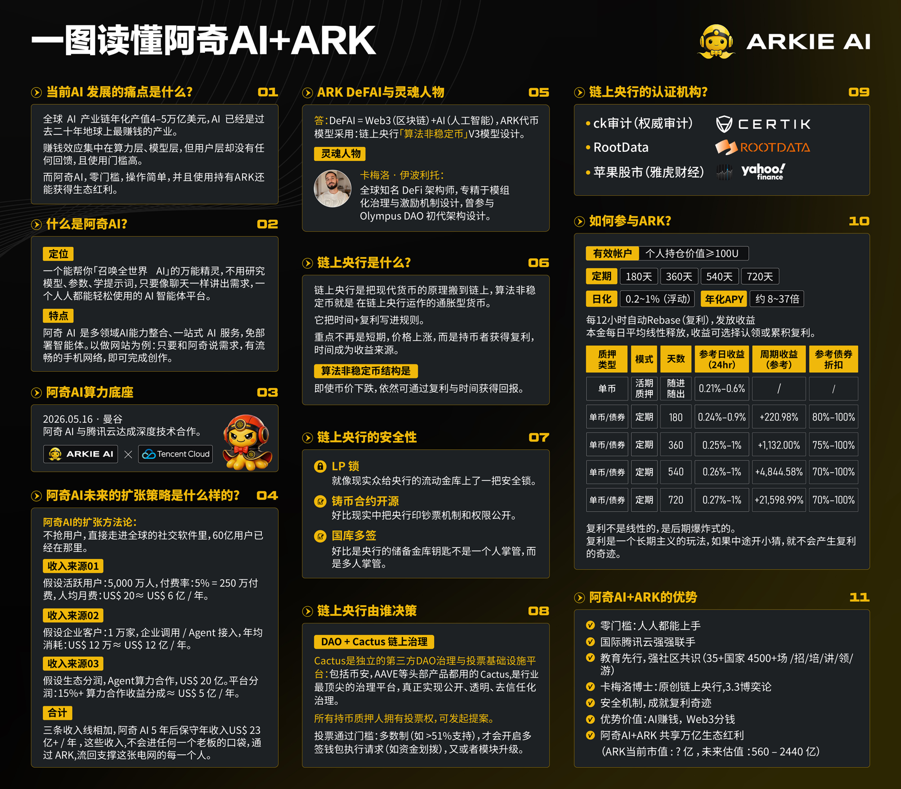

ARK 是什么？
看完你应该能用三句话把 ARK 说清楚，并且讲给任何一个人听。
学习路径第一步。看完你应该能用三句话把 ARK 说清楚，并且讲给任何一个人听。
每一块最后都有一段可以直接念的话。
一、先看一张图（官方「一图读懂」）

官方资料：《一图读懂 阿奇AI + ARK》
二、三句话讲清 ARK
「它叫 ARK，是一个 AI 加区块链的项目。
核心产品是一个 AI 平台，叫阿奇 AI——真能帮你干活的 AI，写文案、做视频、做网站都行。
然后它有两个代币——ARK 和 ARKIE，把这个生态串起来。ARK 管价值沉淀，ARKIE 管流通结算。」
「ARK 承载沉淀价值，ARKIE 负责流通价值，NFT 释放共享价值。」——9/25 晚间 AMA
「ARK 锚定两大赛道，叫 Web3 结合 AI 人工智能。」——9/22 晚间 AMA
| 板块 | 说明 |
|---|---|
| 链上央行（起源） | 卡梅罗博士 2021 年创办 OHM（链上银行 V1），存活至今，链上可查 |
| AI | 阿奇 AI（2026/1/26 上线 1.0，5/16 上线 2.0，8 月宣布 3.0） |
| 支付 | 阿奇支付卡（黑卡 / 金卡） |
| 未来 | 接待、供应链 |
ARK 于 2025 年 8 月 27 日上线，是卡梅罗博士在 OHM 基础上升级优化的第二个产品，称 V3。
板书法讲法 —— 9/26 晨间（讲师亲述：「我在白板上写 ARK，然后画出来：链上央行 + AI + 支付 + 未来的接待和供应链」）
「跟时间做朋友、做长期主义的人，就可以获得更大的收益。」——9/26 晨间
三、为什么它值得关注
「我问你一个问题——你天天用 AI 对不对？
但你有没有想过：AI 赚的钱，跟你有关系吗？
我算给你听。AI 这个产业一年四五万亿美金，这笔钱分三层：卖算力的（英伟达这些）赚几千亿，做模型的（OpenAI 这些）赚几百亿，用 AI 的人——就是我们。
我们这一层的收益是多少？零。
你天天用，你贡献了数据，你帮它变聪明。但蛋糕做大的过程中，切蛋糕的刀，从来没往我们这边切过。」
「我们普通人要成为算力层，甚至打造一个 AI 模型，几乎是不太可能的。所以所有的收益分配都是由下往上流，我们仅仅只是一个简单的用户。」——9/22 晚间 AMA
四、它跟别的有什么不同
「它最不一样的地方，就一句话——
在别的 AI，你是用户；在这里，你是股东。
用户是什么？用完了就完了，跟你没关系。
股东是什么？它赚钱了，有你一份。
而且它不是先发个币圈钱，是先有真产品、有真收入，才有的币。」
「你今天在市面上使用豆包、DeepSeek、ChatGPT，你觉得非常好用，但今天这些公司会分钱给你吗？不会。」——9/22 晚间 AMA
五、一次完整的「ARK 是什么」（1 分钟版）
「我跟你讲个东西，我觉得挺有意思的。
它叫 ARK，是一个 AI 加区块链的项目，核心产品是一个 AI 平台，叫阿奇 AI。
它跟别的 AI 最大的不一样在哪？在别的 AI，你是用户；在这里，你是股东。
你天天用微信、用 ChatGPT，它们赚的钱跟你有关系吗？没有。
但这个东西不一样——你用它，你也是它的一部分，它赚了钱，有你一份。
而且它不是先发个币圈钱，是先有真产品、有真收入，才有的币。」
② 讲「它是什么」；③④ 讲「它跟别人的不同」；⑤ 讲「它的底气从哪来」。
四句话，一分钟讲完。对完全不懂的人，这是最有效的开场。
七、它到底解决什么问题（一句话）
「如果用一句话说清 ARK 解决什么问题：它把"安全"和"长久"这两件事，都写死在链上，让普通人也能自己验证。」
「过去普通人参与项目，只能听别人说——听推荐人怎么说、听项目方怎么吹。」
「但今天，你可以自己查：底池锁没锁、权限丢没丢、国库谁说了算。从"总是听别人说"，变成有专业判断力的人。」
「参与一个项目，我们一定要亲自学会链上查证数据，这才叫真正保护我们的财富资产。我们也能够从总是听别人说，变成有专业判断力的 DeFi 专家。」——AM-022 官方课件
「灵魂五问不是在教你赚钱，而是在告诉你——这个项目是否会出问题、能不能做得长做得久。」——AM-039 官方课件
八、自测
① ARK 是什么？（AI + 区块链，核心产品阿奇 AI）
② 它跟别的币有什么不一样？（先有产品再有币）
③ 三个代币分别干什么？（ARK 沉淀价值 / ARKIE 流通价值 / NFT 共享价值）
能答上，就点下面的「下一步」继续。